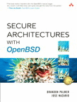

Du bist eingeladen dir unsere detaillierten Bezahl- und Versand-Konditionen anzusehen, bevor du bestellst..
Oder klicke einfach auf eines der Bilder weiter unten...
| Asien Austria |
Australien Belgien |
Brasilien Kanada |
Dänemark Finnland |
Frankreich Deutschland |
Italy Luxembourg |
Mexico Niederlande |
Norwegen Spanien |
Schweden GrossBritannien |
USA |
| OpenBSD Poster: | |||||||||
| OpenBSD 3.6 (Grösseres Bild) Internationale Bestellung... Oder aus Europa... |
OpenBSD 3.5 (Grösseres Bild) ![[Bestelle das OpenBSD 3.5 Poster]](../images/poster11-s.gif) Internationale Bestellung... Oder aus Europa... |
OpenBSD 3.4 (Grösseres Bild) ![[Bestelle das OpenBSD 3.4 Poster]](../images/poster10-s.gif) Internationale Bestellung... Oder aus Europa... |
OpenBSD 3.3 (Grösseres Bild) ![[Bestelle das OpenBSD 3.3 Poster]](../images/poster9-s.gif) Internationale Bestellung... Oder aus Europa... |
OpenBSD 3.2 (Grösseres Bild) ![[Bestelle das OpenBSD 3.2 Poster]](../images/poster8-s.gif) Internationale Bestellung... Oder aus Europa... |
OpenBSD 3.1 (Grösseres Bild) ![[Bestelle das OpenBSD 3.1 Poster]](../images/poster7-s.gif) Internationale Bestellung... Oder aus Europa... |
||||
|
|
|||||||||
| OpenBSD 3.0 (Grösseres Bild) ![[Bestelle das OpenBSD 3.0 Poster]](../images/poster6-s.gif) Internationale Bestellung... Oder aus Europa... |
OpenBSD 2.9 (Grösseres Bild) ![[Bestelle das OpenBSD 2.9 Poster]](../images/poster5-s.gif) Internationale Bestellung... Oder aus Europa... |
OpenBSD 2.8 (Grösseres Bild) ![[Bestelle das OpenBSD 2.8 Poster]](../images/poster4-s.gif) Internationale Bestellung... Oder aus Europa... |
OpenBSD 2.7 (Grösseres Bild) ![[Bestelle das OpenBSD 2.7 Poster]](../images/poster3-s.gif) Internationale Bestellung... Oder aus Europa... |
OpenSSH (Größeres Bild) ![[Bestelle das OpenSSH Poster]](../images/poster2-s.gif) Internationale Bestellung... Oder aus Europa... |
OpenBSD 2.6 (Größeres Bild) ![[Bestelle das OpenBSD 2.6 Poster]](../images/poster1-s.gif) Internationale Bestellung... Oder aus Europa... |
||||
| OpenBSD Bücher: | |||||
| Absolute OpenBSD (Mehr Infos) ![[Bestelle das Buch Absolute OpenBSD]](../images/book2.gif) Internationale Bestellung... Oder aus Europa...
|
Building Firewalls with OpenBSD and PF (Mehr Infos) ![[Bestelle das Buch Building Firewalls with OpenBSD and PF]](../images/book1.gif) Internationale Bestellung... Oder aus Europa...
|
Secure Architectures with OpenBSD (Mehr Infos)  Internationale Bestellung... Oder aus Europa...
|
|||
Wenn du den ComputerShop direkt kontaktieren musst, schicke eine E-Mail an Austin Hook. Grossbesteller können auch faxen: 1 (403) 243-2684 (FAX).
Wende dich an uns, wenn du Kosten für eine Versandversicherung wissen willst, Fragen zur Registrierung oder anderen Versandmethoden hast, oder die Kosten für eine Grossbestellung wissen willst. Schecks oder Bestellungen mit Bargeld können in US Dollar, Kanadischen Dollar oder Euros an die folgenden Adresse gerichtet werden:
The Computer Shop of Calgary LTD.
1644 Broadview Road NW
Calgary, Alberta, Canada
T2N 3H1
Das Porto hängt von verschiedenen Faktoren, wie z.B. dem Bestimmungsort ab. Spezielle Anweisungen sollte es in den Kommentaren zur Bestellung geben. Standardmässig verschicken wir aber wie folgt: Der Versand von Einzel-CDs nach Kanada oder in die USA wird per 'First Class' (Luft-)Post abgewickelt. Andere Länder und kleinere Mengen werden typischerweise per AirMail "Small Packet" verschickt. Diese gewöhnlichen Postsendungen sind übrigens nicht zurückverfolgbar (war dir klar, oder ?) und der Versand geschieht "FOB" von unserem Depot. Wenn du eine Versicherung für deine Ware willst, gib das bitte bei den Kommentaren an und lies den Paragraphen unten über die Versicherungen bitte sorgfältig.
Lieber versichern oder nicht? Verlorene Waren in der normalen (Luft-Post) gehen zu deinen Kosten. Dem stimmst du am Ende deiner Bestellung explizit zu. Wenn trotz allem ein Problem auftritt, reicht der Kanadischen Post deine eidesstattliche Erklärung aus, um dir dein Porto zur&umml;ckzuerstatten. Weiterhin werden wir die verlorengegangenen Sachen für die Herstellungskosten ersetzen, was mindestens die Hälfte des Preises ist. Beispielsweise kostet das Ersetzen eines Posters nur 2$.
Die Versicherungskosten sind natürlich abhängig von der Ware, die versichert werden soll, mit Ausnahme kleiner Lieferungen gibt es von daher Minimalkosten von etwa $7-$10 (Kanadische $ nur in Kanada,ansonsten USi$) - weswegen wir für kleinere Lieferungein davon abraten sie zu versichern. Ausserdem gibt es in den USA und Kanada auch einen Service namens (Priority) Express Post, der zusätzlich zum Verfolgen der Waren und schnellerer Lieferung auch eine Versicherung enthält. Weitere Details gibt es unten.
Standardversicherung für Luftfracht in die USA > 1 kg : Unsere Post bietet eine Standard-Versicherung bis zu $100 CDN (etwa $65 US) für Luftfrachtpakete, die weniger als 1 kg wiegen, an, aber da wir ja die Waren auf Selbstkosten ersetzen, ist es tatsächlich die doppelte Menge. Für den Versand von etwa 5 T-Shirts (je nach Grösse) oder 9 CDROMs hast du also tatsächlich immer eine Versicherung, da wir ja standardmässig per Luftfracht verschicken.
Standard-Versicherung für Pakete, die mehr als 2 kg wiegen und nach ausserhalb von USA/Canada geschickt werden: Unsere Post bete uns eine Standardversicherung über $100 CDN (etwa $65 US) für Luftfracht, die mehr als 2 kg wiegt. (Weiteres siehe oben)
Registration: Ausserhalb USA/Canada "registrieren" wir Pakete normalerweise zwischen 0,2 kg und 2,0 kg. Die kosten hierfür liegen zwischen $7-10 US zusätzlich zum "small packet air" Porto. Die Registrierung beinhaltet $40 US Versicherung. Du kannst angeben, dass du keine Registrierung wünschst, und das Risiko eingehen willst, aber genauso kannst du "please do register" angeben, wenn du sicher gehen willst, dass dein Paket registriert wird. (da wir unsere eigene Erfahrung dabei benutzen, ob es lohnt, ein Paket zu registrieren, auch abhängig von unseren Erfahrungen mit verschiedenen L&aul;ndern).
In USA/Canada gehen weniger als 1% der Waren verloren, es k&oumml;nnte zwar deine sein, trotzdem ist es eine teure Sache für eine Versicherung zu bezahlen. Aber wenn du absolut kein Risiko eingehen willst, versichere deine Sachen einfach. In Nord-Amerika kannst du dazu Express Mail angeben (verfolgbar), oder einen Kurier, wie etwa FEDEX (auch verfolgbar).
Die Versandkosten für ein CD-Set liegen etwa bei $3 - $5 USD. Versandt werden die Waren aus Calgary, Alberta, Kanada. (Einige US Bestellungen werden aus den USA bedient, aber wahrscheinlich nicht direkt nach der Veröffentlichung). Typische Luftpostgebühren für ein(e) Einheit/CD-Set sind etwa:
EXPRESS POST Ein neuer Service, den es nur in den USa und Kanada gibt, ist ist Express Post. 3-6 Tage Lieferzeit, bis zu $50 Versicherung inklusive und Verfolgbarkeit über Canadapost Ab jetzt als neue Option im Web-Bestellformular.
Für ein einzelnes CD Set:
Wenn du deine CD sehr schnell haben willst, kannst du bei einem Kurieri-Service wie Fedex oder UPS "overnight" wählen. Für eine einzelne CD, die von einem Kurier-Dienst ausgelifert wird, ist es sogar preiswerter, wenn man sie "overnight" bestellt, als wenn man 2 oder 3 Tage wartet! Wenn du "overnight" auswählst, solltest du NICHT das Web-Bestellsystem benutzen, sondern direkt im Computer Shop anrufen (403 243-4356). Bestellungen, die vor 15:00 MST aufgegeben wurden, können schon am nächsten Morgen bei dir sein !
Wenn du die CD mit ein paar anderen Dingen bestellst, kannst du z.B. die CD mit "overnight" verschicken lassen und die anderen Sachen eben ganz normal. CDs sind nämlich sehr preiswert per Kurier zu verschicken, da wir sie als Dokumente klassifizieren, während T-shirts, und besonders Poster ziemlich teuer sind. Insbesondere bei Postern nehmen wir an, dasses genau das ist, was du willst, sag also epxlizit in den Kommentaren, wenn alles per Kurier geschickt werden soll, auch die Poster.
Für Kanada und USA kannst du sogar "use credit card" in die Box eintragen, bei der es courier account number heisst. In diesem Fall geben wir deine Kreditkartennummer an den Kurierdienst weiter. Du bekommst dann eine seperate Rechnung von ihnen (natürlich nur für den Versand). Aber es ist besser, wenn du eine Kundennummer bei dem Kurierdienst hast. Wenn wir zu einer Firmenadresse liefern sollen, kannst du ja bei der Firma nachfragen, ob die nicht vielleicht eine solche Kundennummer haben (ruf doch im Zweifel bei FEDEX oder UPS an, falls du dazu noch Fragen hast.
Typische Fedex oder UPS Kosten für eine solche Bestellung mit Priorität sind etwa (für ein Stück):
Teillieferungen: Manchmal ist z.B. ein T-Shirt bestimmter Grösse einfach nicht auf Lager. Wir senden daher manchmal Teillieferungen nicht per Express Post oder Kurier, selbst wenn das gewünscht war. Wenn wir das trtozdem machen sollen, gib es deutlich an !
Österreich Belgien Zypern Tschechien Dänemark Estland Frankreich Finnland Deutschland
Gibraltar Griechenland Grönland Ungarn Island
Irland Italien Lettland Liechtenstein Litauen Luxemburg Malta Monaco
Niederlande Nordirland Norwegen Polen Portugal
San Marino Slovakische Republik Slovenien Spanien Schweden Schweiz Teneriffa
Großbritannien Vatikan
kannst du preiswerter und schneller von kd85.com bvba in Belgien bestellen. Wir haben die meisten T-Shirts und auch CDs auf Lager, auch für Grossbestellungen.
Bestellwege:
Wenn du kd85.com bvba direkt kontaktieren musst, schreib eine Email an
Wim Vandeputte.
Grosse Einrichtungen/Firmen können per Fax bestellen:
unter +32 9 372 46 01 (FAX).
kd85.com BVBA
Wim Vandeputte
Kasteeldreef 85
9920 Lovendegem
Belgium
erreichen.
Postgebühren/Porto sind vom Zielort abhängig. Wenn nichts anderes vereinbart wurde, wird die normale Post verwendet. Daher werden Kosten von 4 bis 9 Euro pro Paket erwartet. (Ja, das ist zusätzlich zum Grundpreis). Die Pakete werden aus Belgien verschickt. Für typische Portokosten sieh einfach auf dieser Webpage nach.
In Hong Kong, kontaktiere einfach:
Genesis Systems Int'l Ltd.
5/F., Honytex Building, 22 Ashley, T.S.T. Kowloon, Hong Kong
Tel:+852 2815 0728
Fax:+852 2815 0729
E-mail: info@genesis.com.hk
Fachbuchhandlung Lehrmittelzentrum Technik & FRIC GmbH
Wiedner Hauptstrasse 13
1040 Vienna / AUSTRIA
Tel +43 - 1 505 64 52 11
Fax +43 - 1 505 64 52 90
Email: buch@lmz.at
www.pinguin.at
Bestelle
OpenBSD online!
Frank Linux-Systems
1110 Vienna / AUSTRIA
Tel.: +43 1 768 3626
Fax.: +43 1 768 6006
Email: produkt@pinguin.at
Linux Systems Labs Australia Pty. Ltd.
21 Ray Drive
Balwyn North
Vic - 3104
Australia
Tel: +61 - 3 - 9857 5918
Fax: +61 - 3 - 9857 8974
Email: sales@lsl.com.au
Pacific Engineering Systems International Pty. Ltd.
Unit 22
8 Campbell St
ARTARMON NSW 2064
Australia
Tel: +61-2-9906-3377
Fax: +61-2-9906-3468
Email: Sales - sales@esi.com.au
oder Damian McGuckin - damianm@esi.com.au
Kontakte Wim Vandeputte - wvdputte@openbsd.org. Mehr Infos auf: dieser Webpage.
|
Livraria Tempo Real Al.Santos, 1202 Telefon 0xx11 3266-2988 Fax 0xx11 251-3760 e-mail temporeal@temporeal.com.br |
Probier unser neues: OpenBSD Online Bestellung!
Bestelle die aktuelle und ältere Versionen zum Discount Presi hier online ! |
Linux Mall
Rua Machado Bittencourt, 190 cj. 207
Telefon: (11) 5087-9441
In British Columbia hat
In Helsinki kontaktiere:
Helsingin DataClub Oy
Sanomatalo, Elielinaukio,
00100 Helsinki,
Finland
Email: palvelu@dataclub.fi
Tel (09) 612 1202
Fax (09) 612 1205
Erhältlich per Mail-Order von:
Vente par correspondance : IKARIOS
Vente par correspondance : MCD2 Diffusion
Du findest auch CD-ROM-Sets der aktuellen Version in diesen wohlbekannten Buchshops
in Paris:
Librairie Eyrolles
57, 61 Boulevard Saint-Germain
75005 Paris
France
Tel: +33 (0) 1 44 41 11 74
Fax: +33 (0) 1 44 41 11 45
Email: librairie@eyrolles.com
Le Monde En Tique
6 Rue Maître Albert
75005 Paris
Tel: +33 (0) 1 55 42 73 73
Fax: +33 (0) 1 55 42 73 74
Infothèque
81, rue d'Amsterdam
75008 Paris
Tel: +33 (0) 1 42 82 17 17
Fax: +33 (0) 1 42 82 18 18
Alternativ kannst du auch Wim Vandeputte - wvdputte@openbsd.org kontaktieren. Mehr Infos auf dieser Webpage
hh-city@lehmanns.de
Lehmanns Fachbuchhandlung GmbH
(Mit Web-Bestellformular!)
- Abt. Versand -
Hardenbergstraße 11
10623 Berlin / GERMANY
Tel 030 - 61 79 11 - 0
Fax 030 - 61 79 11 - 33
ixsoft
Softwareentwicklung und -vertrieb
Bernd Hentig
Unter den Buchen 22E
D-16244 Altenhof
Germany
Web-Bestellformular
Fon: 03 33 63 - 46 - 100
FAX: 03 33 63 - 46 - 109
oeko.net
Oeko.neT Muller & Brandt
Werner-von-Siemens-Strasse 4
D-51674 Wiehl
Germany
Web-Bestellformular
Telefon: +49 2261 979364
FAX: +49 2261 979366
LinuxLand International
Stefan-George-Ring 22
D-81929 München
Germany
Web-Bestellformular
Email: sales@linuxland.de
Telefon: +49-89-993414-30
FAX: +49-89-993414-39
Bochumer Universitaetsverlag GmbH
Querenburger Hoehe 281
44801 Bochum
Germany
Email: info@blaetterwald.net
Telefon: +49 234 9719780, +49 234 701360
FAX: +49 234 9719786, +49 234 701230
Alternativ kannst du auch Wim Vandeputte - wvdputte@openbsd.org kontaktieren. Mehr Infos auf dieser Webpage
Kontaktiere Wim Vandeputte - wvdputte@openbsd.org. Mehr Infos auf dieser Webpage
COMPUGRAF
Norte 72 # 5836 bis Col. Bondojito
Del Gustavo A Madreo
México D.F.
55 51 40 72
55 51 98 68
URL: http://www.e-compugraf.com
E-mail:ventas@e-compugraf.com
Mensys BV
Crayenestersingel 65
2012 PG Haarlem
The Netherlands
Tel: 023 5482020
Fax: 023 5482030
E-mail: info@mensys.nl
URL: www.mensys.nl
VT100
Laan van Meerdervoort 328
2563AM Den Haag
Tel. +31 (0)70 3922521
Alternativ kannst du auch Wim Vandeputte - wvdputte@openbsd.org kontaktieren. Mehr Infos auf dieser Webpage
Inferno Nettverk A/S
Oslo Research Park
Gaustadal\351en 21
N-0349 Oslo
Norway
Email: larry@inet.no
Tel: +47 2295 8303
Fax: +47 2260 4427
Kontaktiere Wim Vandeputte - wvdputte@openbsd.org. Mehr Infos auf dieser Webpage
In Stockholm kontaktiere:
Nohup AB
Tulegatan 39
S-113 53 Stockholm
Sweden
e-mail: sales@nohup.se
tel: +46-8-458 78 10
fax: +46-8-612 55 03
Linuxbutiken, ein Web-Store.
Linuxgrossen, ein Distributor. Sie haben eine Liste von Wiederverkäufern auf ihrer Seite, wo du einfach den dir am nächsten befindlichen heraussuchen kannst. Wenn sie OpenBSD nicht auf Lager haben, werden sie es sofort holen, wenn du nur erwähnst, dass Linuxgrossen es liefert.
New Technology Software
e-mail: ntsoft@ntsoft.dk
Tjornevaenget 29
2740 Skovlunde
Denmark
tel: +45 44852418
fax: +45 44852419
Linuxpusher.dk - OpenBSD orders
email: Jesper Krogh
Ahlmannsgade 3,4th
2200 Koebenhavn N
Denmark
Libreria Universitaria
via del Seminario, 3
5122 - Padova
E-Mail: ordini@libreriauniversitaria.it
Web-Bestellformular
Telefon: +39 049 661 003
Fax: +39 049 655 297
Kontakte Wim Vandeputte - wvdputte@openbsd.org. Mehr Infos auf dieser Webpage
In London kontaktiere:
The PC Bookshop Ltd.
21 Sicilian Avenue
Holborn
London WC1A 2QH
E-Mail: orders@pcbooks.co.uk
Tel: +44 (0) 20 7831 0022
Fax: +44 (0) 20 7831 0443
RPANetwork
Park View House
Main Road
Drayton Parslow
Milton Keynes
MK17 0JS
Web-Bestellformular
E-Mail: sales@rpanetwork.co.uk
Tel: +44 (0) 845 644 2805
Fax: +44 (0) 870 102 3109
Definite Software Ltd
Strawberry Studios
3 Waterloo Road
Stockport
SK1 3BD
Web-Bestellformular
E-Mail: sales@cheeplinux.com
Tel: +44 870 7406575
Fax: +440870 7406576
Abgesehen von der "OpenBSD direct" Bestellmethode (siehe Beginn der Seite), haben die folgenden Onlinegeschäfte OpenBSD und versenden in die gesamte USA:
Softpro Books (Siehe auch walk weiter unten) Bestellungen, die bis 16:00 Uhr eingehen, werden noch am selben Tag versandt.
Oder versuch es im OpenBSD Store. Die Sets werden normalerwiese über USPS Priority Mail zu US Zielorten verschickt, wenn vor 4PM Pacific Time bestellt wird, noch am selben Tag verschickt; Bezahlung per Amazon oder Paypal möglich. Greg Broiles PGP 0x26E4488c oder 0x94245961
Die folgenden Dinge gibt es auch bei der DaemonNews Mall:
Cheapbytes (Mit einem SSL Web-Bestellformular)
In San Antonio, Texas kontaktiere Robert Willmann, Jr.
Diese Dinge kann man bei FATBRAIN.COM bestellen:
(Bestellungen, die bis 16:00 eingegangen sind, werden am sleben Tag verschickt). Siehe auch in ihrem
Partnershop: Computer Literacy (weiter unten)
Bestelle online von ChaosSolutions -- (mit SSL Web Bestellung).
Die folgenden Shops verkaufen per Web oder Mail, laden dich aber auch ein persönlich vorbeizussehen (oder können auch kontaktiert werden, damit man seine Waren abholen kann):
Colorado:
Massachusetts:
New York:
Texas:
![[Bestelle die 3.5 CD]](../images/cd35-s.gif)
![[Bestelle die 3.4 CD]](../images/cd34-s.gif)
![[Bestelle die 3.3 CD]](../images/cd33-s.gif)
![[Bestelle 3.2 CD]](../images/cd32-s.gif)
![[Bestelle 3.1 CD]](../images/cd31-s.gif)
![[Bestelle 3.0 CD]](../images/cd30-s.gif)
![[Bestelle 2.9 CD]](../images/cd29-s.gif)
![[Bestelle 2.8 CD]](../images/cd28-s.gif)
![[Bestelle 2.7 CD]](../images/cd27-s.gif)
![[Bestelle 2.6 CD]](../images/cd26-s.gif)
![[Bestelle 2.5 CD]](../images/cd25-s.gif)
![[Bestelle 2.4 CD]](../images/cd24-s.gif)
![[Bestelle 2.3 CD]](../images/cd23-s.gif)
![[Bestelle 2.2 CD]](../images/cd22-s.gif)
![[Bestelle 2.1 CD]](../images/cd21-s.gif)
![[Order CARP]](../images/tshirt-21b-s.gif)
![[Bestelle Puffy Hood]](../images/tshirt-20b-s.gif)
![[Bestelle das Barbaren T-Shirt]](../images/tshirt-19b-s.gif)
![[Bestelle das neue OpenSSH-Shirt]](../images/tshirt-18b-s.gif)
![[Bestelle das Agent 077 T-Shirt]](../images/tshirt-17b-s.gif)
![[Bestelle das Chix Dig OpenBSD]](../images/tshirt-16b-s.gif)
![[Bestelle das Hostile Internet shirt]](../images/tshirt-15-s.gif)
![[Bestelle das Baby-T girly Shirt]](../images/tshirt-14-s.gif)
![[Bestelle das Mean 2.8 shirt]](../images/tshirt-13-s.gif)
![[Bestelle das cute 2.8 Shirt]](../images/tshirt-12-s.gif)
![[Bestelle das Blowfish Polo shirt]](../images/tshirt-11-s.gif)
![[Bestelle das Three Head shirt]](../images/tshirt-10-s.gif)
![[Bestelle das OpenSSH shirt]](../images/tshirt-9b-s.gif)
![[Bestelle das 2.6 Fishbowl shirt]](../images/tshirt-8b-s.gif)
![[Bestelle das Crypto Globe shirt]](../images/tshirt-7b-s.gif)
![[Bestelle das 2.5 Cop shirt]](../images/tshirt-6-s.gif)
![[Bestelle das OpenBSE shirt]](../images/tshirt-5-s.gif)
![[Bestelle das Blowfish shirt]](../images/tshirt-4-s.gif)
![[Bestelle das Wireframe shirt]](../images/tshirt-2-s.gif)
{kind=link}
{kind=link}
{kind=link}
{kind=link}
{kind=link}
{kind=link}
{kind=link}
{kind=link}
{kind=link}
{kind=link}
{kind=link}
{kind=link}